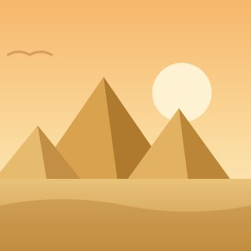
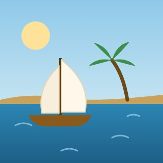
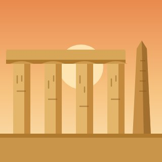
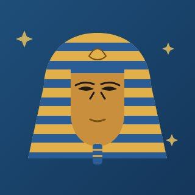
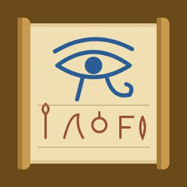

إيه هو شات كيمت؟
شات كيمت (Chat Kemet) هو شات مصري فرعوني معمول علشان المصريين يتكلموا ويتعرفوا على بعض بسهولة. "كيمت" هو اسم مصر عند الفراعنة، وعلشان كده كل حاجة في الشات فيها لمسة فرعونية: من الغرف لحد الألوان الدهبي.
مش محتاج تحمّل حاجة ولا تعمل حساب — افتح الموقع، قول انت ولد ولا بنت، وادخل. ولو عجبك تقدر تسجل بجوجل أو بالإيميل علشان اسمك وصورتك يتحفظوا.
الغرف الست

غرفة الأهرامات
الغرفة الرئيسية — كل الناس بتتجمع هنا للدردشة العامة.

نهر النيل
كلام هادي ورايق زي النيل، فضفضة وحكايات.

الأقصر وأسوان
لأهل الصعيد وكل اللي بيحب الجنوب وحكاياته.
إسكندرية
هوا البحر ودردشة أهل إسكندرية وحبايبها.

شباب كيمت
للشباب: هزار، ألعاب، وكلام في كل حاجة.

تاريخ مصر القديمة
نقاشات عن الفراعنة والآثار وتاريخ كيمت.
مميزات شات كيمت
- 🆓ببلاش خالصكل الغرف والرسايل من غير أي فلوس.
- ⚡من غير تسجيلادخل كزائر في ثانية.
- 💬رسايل خاصةكلم أي حد على الخاص بعيد عن الغرف.
- 🎤صور وفويسابعت صور ورسايل صوتية واتكلم صوت في الغرف.
- 🎲ألعاب وهداياالعب لودو ودومينو وابعت هدايا لصحابك.
- 📱تطبيق للموبايلأندرويد وآيفون، مع إشعارات حتى والتطبيق مقفول.
- 🌙وضع ليليمريح للعين بالليل.
- 🛡️إشراف ومتابعةمشرفين في الغرف علشان الدردشة تفضل محترمة.
أسئلة شائعة
شات كيمت ببلاش؟
أيوه، شات كيمت (Chat Kemet) ببلاش خالص. تدخل الغرف وتبعت رسايل خاصة وصور وفويس من غير ما تدفع حاجة.
لازم أعمل حساب علشان أدخل شات كيمت؟
لأ، تقدر تدخل كزائر على طول وتختار انت ولد ولا بنت. ولو عايز تحفظ اسمك وصورتك تقدر تسجل بحساب جوجل أو بالإيميل.
إيه الغرف اللي في شات كيمت؟
فيه ست غرف أساسية: غرفة الأهرامات، نهر النيل، الأقصر وأسوان، إسكندرية، شباب كيمت، وتاريخ مصر القديمة.
فيه تطبيق لشات كيمت على الموبايل؟
أيوه، فيه تطبيق أندرويد، وعلى الآيفون تقدر تضيف الشات للشاشة الرئيسية من سفاري ويشتغل زي التطبيق وتجيلك إشعارات.
ليه اسمه شات كيمت؟
كيمت هو اسم مصر عند الفراعنة، ومعناه الأرض السودا الخصبة اللي على النيل. علشان كده شات كيمت هو شات مصري فرعوني بروح مصرية.